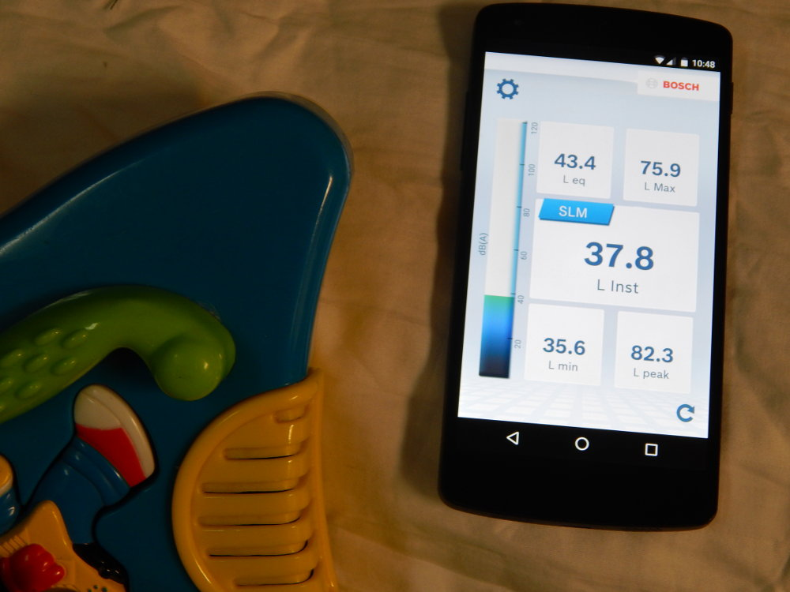
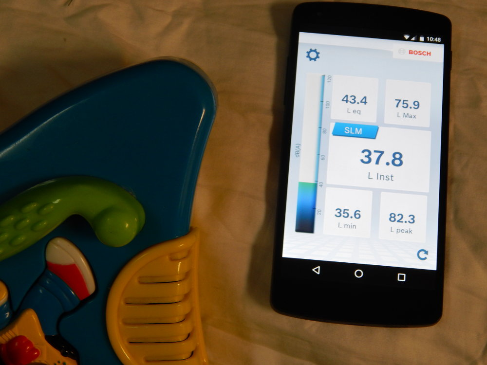
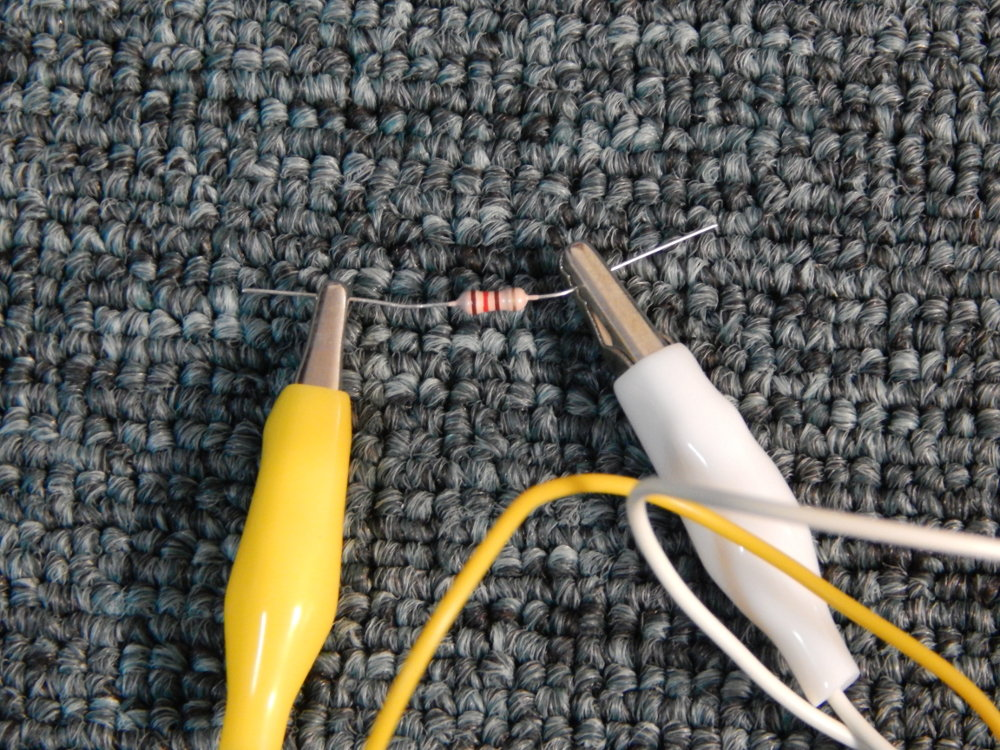
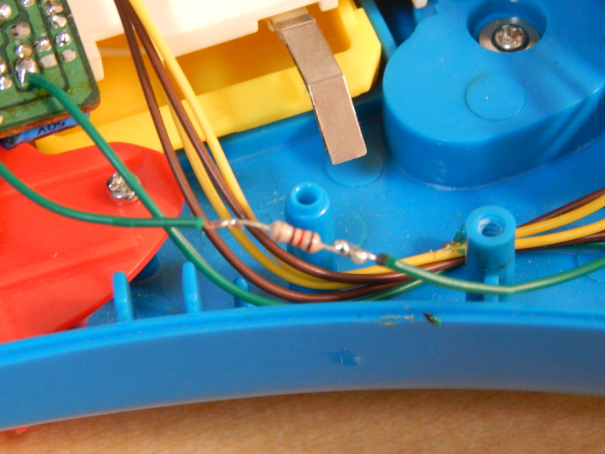
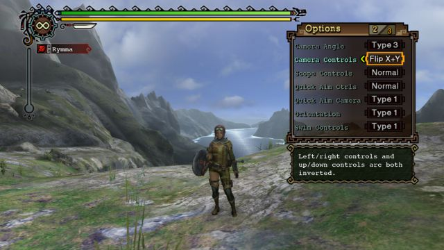
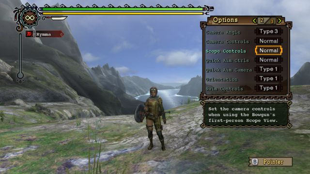
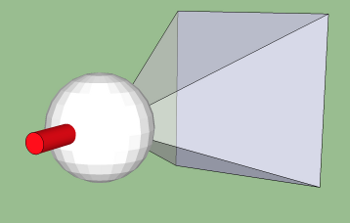
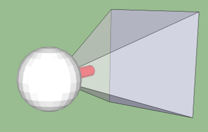

Reducing a Toy's Decibel Output
2016-12-28
It's Christmas time, and my daughter likes to play with her new toy guitar. My problem is that it's way too loud. I'm not an electrical engineer, but I figure if I add a resistor to the circuit, it should be quieter.
Lacking any fancy instruments to measure decibel outputs from the toy guitar, I chose to use a random decibel reading app on my android device.
The app I installed is iNVH from Robert Bosch Engineering & Business Solutions(P) Ltd
Wa wa wa.
 

Toy guitar decibel output versus ambiant level. |


Open the toy, cut any of the two wires attached to the speaker in two and strip the endings. |


Test resistor until the decibel level wanted is found. |


Solder the resistor, and wrap in electrical tape. |
Inverted Analog Stick Camera Controls: Inverted to what?
2012-01-19
A dedicated analog stick for camera controls is popular in many 3rd-person and 1st-person video games. All 7th generation video game consoles offer a dual analog sticks controller, though it is an optional peripheral on the Nintendo Wii. Games differ in their choice of axes orientation for controlling the camera, but two configurations are commonly found as the default. In the game Final Fantasy XII, the right analog stick works like a tripod handle where pushing the stick left will turn the attention of the camera to its right, and pushing the stick up will reveal what is down on the ground. In the game Dragon Age for PS3, the default camera controls work as if the handle of the tripod was in front of the camera instead of behind it. This means that moving the stick left will pull the camera towards what is on the left. Moving the stick up will lift the camera's gaze upward to look at the ceiling. This blog post exposes the confusion that arises from arbitrarily naming one of the configuration normal, and its opposite inverted.
- No camera options
- The game provides no way to change how the camera is controlled. This is the worst scenario in terms of usability.
Example: Final Fantasy XII - Partial options
- The game provides the option to invert only one of the axes.
Examples: Grand Theft Auto 4 on PC, Faery: Legends Of Avalon on PS3 - No Game Mode options
- The game can switch from 3rd-person exploration to 1st-person mode, but there is no way for the user to configure different camera settings for each modes.
Example: Batman Arkham Asylum on PS3 - Workaround
- On the PC it is possible to bypass poor input design by inserting an extra layer between the controller and the game, but it is burdensome and comes short if there are game modes.
Tool: XBOX 360 Controller emulator (x360ce)
The Monster Hunter series by Capcom released games on Nintendo platforms bundled with dual analog sticks controllers.
On the Wii, it was bundled with the Classic Controller Pro, and on the 3DS it is bundled with the Circle Pad Pro.
This is a strong indication that the development team at Capcom is seriously invested in providing excellent analog stick camera controls to its games.
It comes at no surprise that Monster Hunter Tri allows user to configure the analog stick camera controls to all four possible axis orientations,
and includes separate settings for 3rd-person camera controls and 1st-person aiming controls.
Though the game provides comprehensive settings, my grudge with them and all other games is in naming the default camera controls normal and referring to the other combinations as inverted or flipped.


Monster Hunter Tri options screen. |
Batman Arkham Asylum has the very confusing options Invert Look (yes/no) and Invert Rotation (yes/no). Only through trial and error can the user find out that the former inverts the y-axis from the default controls, and the latter inverts the x-axis.
The poor naming is the issue that is problematic to me, and leads to very confused conversation where people take a side between normal and inverted controls without defining what exactly the controls are inverted from. Normal and inverted mean nothing on their own and differ from game to game. The following YouTube video Inverted vs Normal Game Controls by IGN AU Rant rants about how inverted controls are better, and though they define what they mean by inverted, it's still very silly when they say that almost every game sets their camera settings to normal. The truth is, no game sets their defaults to inverted: it's their definition of normal controls that differs.
A solution is to create names for the configurations that users can understand and recognize.
I propose to name the two common configurations tripod and gaze, and then allow users to invert individual axis with respect to the chosen configuration. These names are of course preliminary. I also propose including icons similar to the following two sketches.
|

Tripod

Gaze |
Aircraft controls work on the y/z planes and are not camera controls. The other analog stick is usually responsible for avatar movement. I believe this is one source of the confusion that leads some developers to include only the option to invert the y-axis.
To sum it all up, games should always allow users to use any of the four possible axis orientations and do so using clear names, and include separate settings for each game modes. I recommend letting the users configure the game before it starts, such that they do not even have to try the controls before realizing they are the opposite of what they wanted.